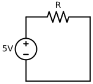
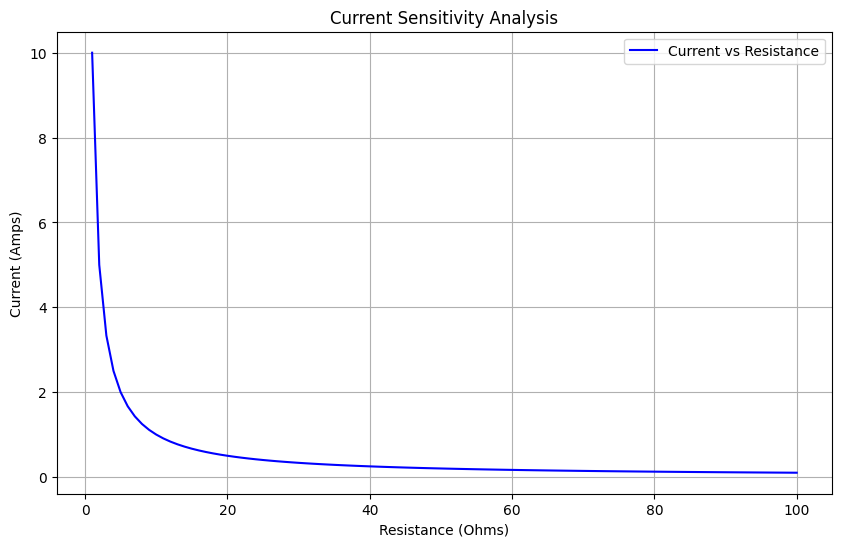
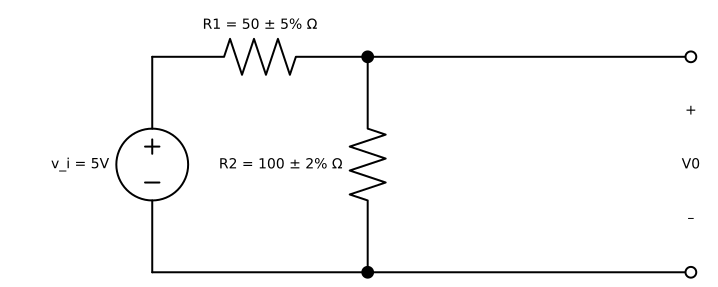
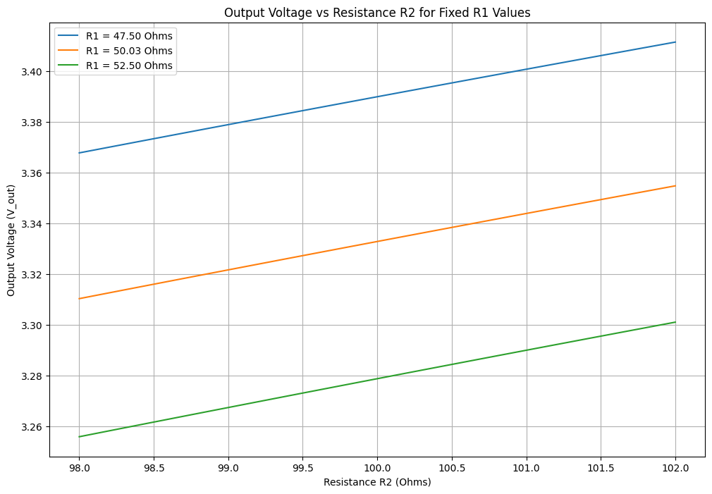
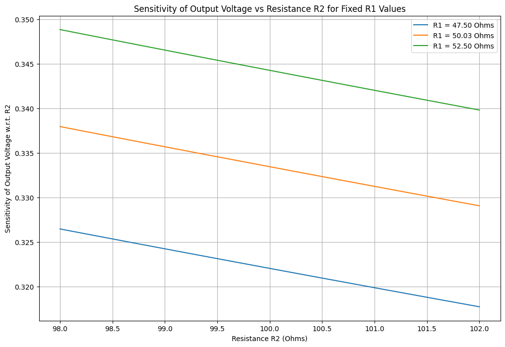

<!DOCTYPE html>


<html lang="en" data-content_root="../../" >

  <head>
    <meta charset="utf-8" />
    <meta name="viewport" content="width=device-width, initial-scale=1.0" /><meta name="viewport" content="width=device-width, initial-scale=1" />

    <title>Sensitivity analysis &#8212; Dr.Hadi Sadoghi Yazdi</title>
  
  
  
  <script data-cfasync="false">
    document.documentElement.dataset.mode = localStorage.getItem("mode") || "";
    document.documentElement.dataset.theme = localStorage.getItem("theme") || "";
  </script>
  <!-- 
    this give us a css class that will be invisible only if js is disabled 
  -->
  <noscript>
    <style>
      .pst-js-only { display: none !important; }

    </style>
  </noscript>
  
  <!-- Loaded before other Sphinx assets -->
  <link href="../../_static/styles/theme.css?digest=26a4bc78f4c0ddb94549" rel="stylesheet" />
<link href="../../_static/styles/pydata-sphinx-theme.css?digest=26a4bc78f4c0ddb94549" rel="stylesheet" />

    <link rel="stylesheet" type="text/css" href="../../_static/pygments.css?v=fa44fd50" />
    <link rel="stylesheet" type="text/css" href="../../_static/styles/sphinx-book-theme.css?v=a3416100" />
    <link rel="stylesheet" type="text/css" href="../../_static/togglebutton.css?v=13237357" />
    <link rel="stylesheet" type="text/css" href="../../_static/copybutton.css?v=76b2166b" />
    <link rel="stylesheet" type="text/css" href="../../_static/mystnb.4510f1fc1dee50b3e5859aac5469c37c29e427902b24a333a5f9fcb2f0b3ac41.css" />
    <link rel="stylesheet" type="text/css" href="../../_static/sphinx-thebe.css?v=4fa983c6" />
    <link rel="stylesheet" type="text/css" href="../../_static/sphinx-design.min.css?v=95c83b7e" />
  
  <!-- So that users can add custom icons -->
  <script src="../../_static/scripts/fontawesome.js?digest=26a4bc78f4c0ddb94549"></script>
  <!-- Pre-loaded scripts that we'll load fully later -->
  <link rel="preload" as="script" href="../../_static/scripts/bootstrap.js?digest=26a4bc78f4c0ddb94549" />
<link rel="preload" as="script" href="../../_static/scripts/pydata-sphinx-theme.js?digest=26a4bc78f4c0ddb94549" />

    <script src="../../_static/documentation_options.js?v=9eb32ce0"></script>
    <script src="../../_static/doctools.js?v=9a2dae69"></script>
    <script src="../../_static/sphinx_highlight.js?v=dc90522c"></script>
    <script src="../../_static/clipboard.min.js?v=a7894cd8"></script>
    <script src="../../_static/copybutton.js?v=f281be69"></script>
    <script src="../../_static/scripts/sphinx-book-theme.js?v=887ef09a"></script>
    <script>let toggleHintShow = 'Click to show';</script>
    <script>let toggleHintHide = 'Click to hide';</script>
    <script>let toggleOpenOnPrint = 'true';</script>
    <script src="../../_static/togglebutton.js?v=4a39c7ea"></script>
    <script>var togglebuttonSelector = '.toggle, .admonition.dropdown';</script>
    <script src="../../_static/design-tabs.js?v=f930bc37"></script>
    <script>const THEBE_JS_URL = "https://unpkg.com/thebe@0.8.2/lib/index.js"; const thebe_selector = ".thebe,.cell"; const thebe_selector_input = "pre"; const thebe_selector_output = ".output, .cell_output"</script>
    <script async="async" src="../../_static/sphinx-thebe.js?v=c100c467"></script>
    <script>var togglebuttonSelector = '.toggle, .admonition.dropdown';</script>
    <script>const THEBE_JS_URL = "https://unpkg.com/thebe@0.8.2/lib/index.js"; const thebe_selector = ".thebe,.cell"; const thebe_selector_input = "pre"; const thebe_selector_output = ".output, .cell_output"</script>
    <script>window.MathJax = {"options": {"processHtmlClass": "tex2jax_process|mathjax_process|math|output_area"}}</script>
    <script defer="defer" src="https://cdn.jsdelivr.net/npm/mathjax@3/es5/tex-mml-chtml.js"></script>
    <script>DOCUMENTATION_OPTIONS.pagename = 'Circuit_Electronics/StudentEffort/Sensitivity_analysis';</script>
    <link rel="index" title="Index" href="../../genindex.html" />
    <link rel="search" title="Search" href="../../search.html" />
  <meta name="viewport" content="width=device-width, initial-scale=1"/>
  <meta name="docsearch:language" content="en"/>
  <meta name="docsearch:version" content="" />
  </head>
  
  
  <body data-bs-spy="scroll" data-bs-target=".bd-toc-nav" data-offset="180" data-bs-root-margin="0px 0px -60%" data-default-mode="">

  
  
  <div id="pst-skip-link" class="skip-link d-print-none"><a href="#main-content">Skip to main content</a></div>
  
  <div id="pst-scroll-pixel-helper"></div>
  
  <button type="button" class="btn rounded-pill" id="pst-back-to-top">
    <i class="fa-solid fa-arrow-up"></i>Back to top</button>

  
  <dialog id="pst-search-dialog">
    
<form class="bd-search d-flex align-items-center"
      action="../../search.html"
      method="get">
  <i class="fa-solid fa-magnifying-glass"></i>
  <input type="search"
         class="form-control"
         name="q"
         placeholder="Search this book..."
         aria-label="Search this book..."
         autocomplete="off"
         autocorrect="off"
         autocapitalize="off"
         spellcheck="false"/>
  <span class="search-button__kbd-shortcut"><kbd class="kbd-shortcut__modifier">Ctrl</kbd>+<kbd>K</kbd></span>
</form>
  </dialog>

  <div class="pst-async-banner-revealer d-none">
  <aside id="bd-header-version-warning" class="d-none d-print-none" aria-label="Version warning"></aside>
</div>

  
    <header class="bd-header navbar navbar-expand-lg bd-navbar d-print-none">
    </header>
  

  <div class="bd-container">
    <div class="bd-container__inner bd-page-width">
      
      
      
        
      
      <dialog id="pst-primary-sidebar-modal"></dialog>
      <div id="pst-primary-sidebar" class="bd-sidebar-primary bd-sidebar">
        

  
  <div class="sidebar-header-items sidebar-primary__section">
    
    
    
    
  </div>
  
    <div class="sidebar-primary-items__start sidebar-primary__section">
        <div class="sidebar-primary-item">

  
    
  

<a class="navbar-brand logo" href="../../Introduction_CircuitElectronics.html">
  
  
  
  
  
    
    
      
    
    
    
    
  
  
</a></div>
        <div class="sidebar-primary-item">

<button class="btn search-button-field search-button__button pst-js-only" title="Search" aria-label="Search" data-bs-placement="bottom" data-bs-toggle="tooltip">
 <i class="fa-solid fa-magnifying-glass"></i>
 <span class="search-button__default-text">Search</span>
 <span class="search-button__kbd-shortcut"><kbd class="kbd-shortcut__modifier">Ctrl</kbd>+<kbd class="kbd-shortcut__modifier">K</kbd></span>
</button></div>
        <div class="sidebar-primary-item"><nav class="bd-links bd-docs-nav" aria-label="Main">
    <div class="bd-toc-item navbar-nav active">
        
        <ul class="nav bd-sidenav bd-sidenav__home-link">
            <li class="toctree-l1">
                <a class="reference internal" href="../../Introduction_CircuitElectronics.html">
                    Introduction to Circuit and Electronics
                </a>
            </li>
        </ul>
        <p aria-level="2" class="caption" role="heading"><span class="caption-text">Sections of Circuit and Electronics course</span></p>
<ul class="nav bd-sidenav">
<li class="toctree-l1"><a class="reference internal" href="../BasicElements.html">Basic component</a></li>
<li class="toctree-l1"><a class="reference internal" href="../KVL_KCL.html">Voltage , Current</a></li>
<li class="toctree-l1"><a class="reference internal" href="../NodalMeshAnalysis.html">Basic Nodal and Mesh Analysis</a></li>
<li class="toctree-l1"><a class="reference internal" href="../RC_RL_RLC.html">R-C, R-L circuits</a></li>
<li class="toctree-l1"><a class="reference internal" href="../Diode_chapter.html">Diode</a></li>
<li class="toctree-l1"><a class="reference internal" href="../DiodeApplication.html">Diode Application</a></li>
<li class="toctree-l1"><a class="reference internal" href="../BJT1.html">Bipolar junction transistor</a></li>
<li class="toctree-l1"><a class="reference internal" href="../FET.html">Field Effect Transistor</a></li>
<li class="toctree-l1"><a class="reference internal" href="../OpAmp.html">Operational Amplifier</a></li>
</ul>
<p aria-level="2" class="caption" role="heading"><span class="caption-text">Teaching assistant</span></p>
<ul class="nav bd-sidenav">
<li class="toctree-l1"><a class="reference internal" href="../PySpice_Installation_Manual.html">PySpice Installation Manual</a></li>
<li class="toctree-l1"><a class="reference internal" href="../PySpice_circuit_example1.html">Example 1: RESISTIVE DIVIDER</a></li>
<li class="toctree-l1"><a class="reference internal" href="../PySpice_circuit_example2.html">Example 2: DIODE CIRCUIT</a></li>
</ul>
<p aria-level="2" class="caption" role="heading"><span class="caption-text">Students effort</span></p>
<ul class="nav bd-sidenav">
<li class="toctree-l1"><a class="reference internal" href="../DiodeCharacteristicCurve.html">Diode Characteristic Curve</a></li>
<li class="toctree-l1"><a class="reference internal" href="../SchemdrawGuide1.html">Schemdraw Guide book</a></li>
<li class="toctree-l1"><a class="reference internal" href="independentcurrentandvoltagesources/miniProject.html">Independent current/voltage sources</a></li>


<li class="toctree-l1"><a class="reference internal" href="AveragePower.html"><strong>Average power</strong></a></li>
<li class="toctree-l1"><a class="reference internal" href="PassiveComponents/Passive%20Components.html">Passive Components</a></li>
<li class="toctree-l1"><a class="reference internal" href="Linearization/LinearizationProject.html"><strong>Linear approximation</strong></a></li>
<li class="toctree-l1"><a class="reference internal" href="batteryModel/battery_model.html">Battery Models</a></li>
<li class="toctree-l1"><a class="reference internal" href="Sensitivity_analysis1.html">Sensitivity analysis</a></li>
<li class="toctree-l1"><a class="reference internal" href="WhatBias/bias1.html"><strong>Bias:</strong></a></li>
<li class="toctree-l1"><a class="reference internal" href="Supermesh/Supermesh.html">Supermesh</a></li>
<li class="toctree-l1"><a class="reference internal" href="KVL_and_KCL/note%20book.html">KVL &amp; KCL</a></li>
</ul>
<p aria-level="2" class="caption" role="heading"><span class="caption-text">Contact</span></p>
<ul class="nav bd-sidenav">
<li class="toctree-l1"><a class="reference internal" href="../../Contact_Me.html">Contact Me</a></li>
<li class="toctree-l1"><a class="reference internal" href="../../About_Me.html">About Me</a></li>
</ul>

    </div>
</nav></div>
    </div>
  
  
  <div class="sidebar-primary-items__end sidebar-primary__section">
  </div>
  
  <div id="rtd-footer-container"></div>


      </div>
      
      <main id="main-content" class="bd-main" role="main">
        
        

<div class="sbt-scroll-pixel-helper"></div>

          <div class="bd-content">
            <div class="bd-article-container">
              
              <div class="bd-header-article d-print-none">
<div class="header-article-items header-article__inner">
  
    <div class="header-article-items__start">
      
        <div class="header-article-item"><button class="sidebar-toggle primary-toggle btn btn-sm" title="Toggle primary sidebar" data-bs-placement="bottom" data-bs-toggle="tooltip">
  <span class="fa-solid fa-bars"></span>
</button></div>
      
    </div>
  
  
    <div class="header-article-items__end">
      
        <div class="header-article-item">

<div class="article-header-buttons">


<div class="dropdown dropdown-source-buttons">
  <button class="btn dropdown-toggle" type="button" data-bs-toggle="dropdown" aria-expanded="false" aria-label="Source repositories">
    <i class="fab fa-github"></i>
  </button>
  <ul class="dropdown-menu">
      
      
      
      <li><a href="https://github.com/h-sadoghi/dr-sadoghi.git" target="_blank"
   class="btn btn-sm btn-source-repository-button dropdown-item"
   title="Source repository"
   data-bs-placement="left" data-bs-toggle="tooltip"
>
  

<span class="btn__icon-container">
  <i class="fab fa-github"></i>
  </span>
<span class="btn__text-container">Repository</span>
</a>
</li>
      
      
      
      
      <li><a href="https://github.com/h-sadoghi/dr-sadoghi.git/issues/new?title=Issue%20on%20page%20%2FCircuit_Electronics/StudentEffort/Sensitivity_analysis.html&body=Your%20issue%20content%20here." target="_blank"
   class="btn btn-sm btn-source-issues-button dropdown-item"
   title="Open an issue"
   data-bs-placement="left" data-bs-toggle="tooltip"
>
  

<span class="btn__icon-container">
  <i class="fas fa-lightbulb"></i>
  </span>
<span class="btn__text-container">Open issue</span>
</a>
</li>
      
  </ul>
</div>


<div class="dropdown dropdown-download-buttons">
  <button class="btn dropdown-toggle" type="button" data-bs-toggle="dropdown" aria-expanded="false" aria-label="Download this page">
    <i class="fas fa-download"></i>
  </button>
  <ul class="dropdown-menu">
      
      
      
      <li><a href="../../_sources/Circuit_Electronics/StudentEffort/Sensitivity_analysis.ipynb" target="_blank"
   class="btn btn-sm btn-download-source-button dropdown-item"
   title="Download source file"
   data-bs-placement="left" data-bs-toggle="tooltip"
>
  

<span class="btn__icon-container">
  <i class="fas fa-file"></i>
  </span>
<span class="btn__text-container">.ipynb</span>
</a>
</li>
      
      
      
      
      <li>
<button onclick="window.print()"
  class="btn btn-sm btn-download-pdf-button dropdown-item"
  title="Print to PDF"
  data-bs-placement="left" data-bs-toggle="tooltip"
>
  

<span class="btn__icon-container">
  <i class="fas fa-file-pdf"></i>
  </span>
<span class="btn__text-container">.pdf</span>
</button>
</li>
      
  </ul>
</div>


<button onclick="toggleFullScreen()"
  class="btn btn-sm btn-fullscreen-button"
  title="Fullscreen mode"
  data-bs-placement="bottom" data-bs-toggle="tooltip"
>
  

<span class="btn__icon-container">
  <i class="fas fa-expand"></i>
  </span>

</button>


<button class="btn btn-sm nav-link pst-navbar-icon theme-switch-button pst-js-only" aria-label="Color mode" data-bs-title="Color mode"  data-bs-placement="bottom" data-bs-toggle="tooltip">
  <i class="theme-switch fa-solid fa-sun                fa-lg" data-mode="light" title="Light"></i>
  <i class="theme-switch fa-solid fa-moon               fa-lg" data-mode="dark"  title="Dark"></i>
  <i class="theme-switch fa-solid fa-circle-half-stroke fa-lg" data-mode="auto"  title="System Settings"></i>
</button>


<button class="btn btn-sm pst-navbar-icon search-button search-button__button pst-js-only" title="Search" aria-label="Search" data-bs-placement="bottom" data-bs-toggle="tooltip">
    <i class="fa-solid fa-magnifying-glass fa-lg"></i>
</button>
<button class="sidebar-toggle secondary-toggle btn btn-sm" title="Toggle secondary sidebar" data-bs-placement="bottom" data-bs-toggle="tooltip">
    <span class="fa-solid fa-list"></span>
</button>
</div></div>
      
    </div>
  
</div>
</div>
              
              

<div id="jb-print-docs-body" class="onlyprint">
    <h1>Sensitivity analysis</h1>
    <!-- Table of contents -->
    <div id="print-main-content">
        <div id="jb-print-toc">
            
            <div>
                <h2> Contents </h2>
            </div>
            <nav aria-label="Page">
                <ul class="visible nav section-nav flex-column">
<li class="toc-h2 nav-item toc-entry"><a class="reference internal nav-link" href="#introduction">Introduction</a></li>
<li class="toc-h2 nav-item toc-entry"><a class="reference internal nav-link" href="#what-is-sensitivity-analysis">WHAT IS SENSITIVITY ANALYSIS?</a></li>
<li class="toc-h2 nav-item toc-entry"><a class="reference internal nav-link" href="#sensitivity-analysis-in-circuits">Sensitivity Analysis in Circuits</a></li>
<li class="toc-h2 nav-item toc-entry"><a class="reference internal nav-link" href="#computing-sensitivity-in-general">Computing sensitivity in general:</a></li>
<li class="toc-h2 nav-item toc-entry"><a class="reference internal nav-link" href="#determining-sensitivity">Determining sensitivity</a></li>
<li class="toc-h2 nav-item toc-entry"><a class="reference internal nav-link" href="#sensitivity-in-a-resistive-circuit">Sensitivity in a resistive circuit</a></li>
<li class="toc-h2 nav-item toc-entry"><a class="reference internal nav-link" href="#sensitivity-analysis-in-a-voltage-divider">Sensitivity analysis in a voltage divider</a></li>
<li class="toc-h2 nav-item toc-entry"><a class="reference internal nav-link" href="#code-explination">Code explination</a></li>
<li class="toc-h2 nav-item toc-entry"><a class="reference internal nav-link" href="#sensitivity-in-a-voltage-divider">Sensitivity in a voltage divider</a></li>
<li class="toc-h2 nav-item toc-entry"><a class="reference internal nav-link" href="#what-will-happen-to-the-output-voltage-if-the-resistances-in-the-circuit-change">What will happen to the output voltage if the resistances in the circuit change?</a></li>
<li class="toc-h2 nav-item toc-entry"><a class="reference internal nav-link" href="#the-taylor-series-expansion">the Taylor series expansion:</a></li>
<li class="toc-h2 nav-item toc-entry"><a class="reference internal nav-link" href="#id1">Code explination</a></li>
<li class="toc-h2 nav-item toc-entry"><a class="reference internal nav-link" href="#sensitivity-analysis-in-the-voltage-divider">Sensitivity analysis in the voltage divider:</a></li>
<li class="toc-h2 nav-item toc-entry"><a class="reference internal nav-link" href="#id2">Code explination</a></li>
<li class="toc-h2 nav-item toc-entry"><a class="reference internal nav-link" href="#conclusion">Conclusion</a></li>
<li class="toc-h2 nav-item toc-entry"><a class="reference internal nav-link" href="#refrences">Refrences:</a></li>
</ul>
            </nav>
        </div>
    </div>
</div>

              
                
<div id="searchbox"></div>
                <article class="bd-article">
                  
  <section class="tex2jax_ignore mathjax_ignore" id="sensitivity-analysis">
<h1>Sensitivity analysis<a class="headerlink" href="#sensitivity-analysis" title="Link to this heading">#</a></h1>
<p><strong>Author</strong> : Saman Hooshvar</p>
<p>Contact : <a class="reference external" href="mailto:saman&#46;hooshvarfeyzabadi&#37;&#52;&#48;mail&#46;um&#46;ac&#46;ir">saman<span>&#46;</span>hooshvarfeyzabadi<span>&#64;</span>mail<span>&#46;</span>um<span>&#46;</span>ac<span>&#46;</span>ir</a></p>
<section id="introduction">
<h2>Introduction<a class="headerlink" href="#introduction" title="Link to this heading">#</a></h2>
<p>Sensitivity analysis is very important especially in the fields
of electrical and electronics engineering due to the fact
that circuits practically have tolerance.
In reality, there is no such
thing as a “perfect” component, and each element in an
electric circuit will always have tolerance values, specifically
minimum and maximum values. For example, if we consider a
simple <span class="math notranslate nohighlight">\( 100Ω \)</span> resistor, it will always have a tolerance value
of, for example, five percent (5%). Thus, the minimum and
maximum values of this passive electric component are <span class="math notranslate nohighlight">\( 95Ω \)</span> and
<span class="math notranslate nohighlight">\( 105 Ω \)</span>, respectively, without also considering temperature
effects. Even the most precise electric components available in
the market have their own tolerances. Thus, there is a need to
understand the basics of sensitivity and its application to
electric circuit analysis.</p>
</section>
<section id="what-is-sensitivity-analysis">
<h2>WHAT IS SENSITIVITY ANALYSIS?<a class="headerlink" href="#what-is-sensitivity-analysis" title="Link to this heading">#</a></h2>
<p>Sensitivity, generally, is the ability of an entity to be
susceptible to stimulation. If we are talking about electric
circuits, the sensitivity of that circuit is its ability to react with
changes in certain parameters. It is a measure of how the
system reacts to any stimulation, either internal or external.
For example, sensitivity can be the measure of how a voltagedivider circuit composed of a constant dc voltage source and
two resistors in series reacts in terms of the output voltage,
with respect to perturbations in one resistor. When we say
perturbation, we mean that the resistor changes from within its
minimum and maximum levels. Sensitivity Analysis, on the
other hand, is the study of the sensitivity in a system. If we are
applying mathematical and scientific concepts in analyzing the
variations in the output voltage of a voltage-divider circuit
with perturbations in one resistor, then we can say that we are
performing a sensitivity analysis on the circuit.</p>
<p>Generally, sensitivity can be described as the limiting ratio
of the fractional change in a measured value to the fractional
change in value of a certain parameter. Thus, if the change in
a measured value is too small even if the change in a certain
parameter is large, then we can say that the system is not
sensitive or has a <strong>low sensitivity</strong>. On the other hand, if the
change in a measured value is too large even if the change in a
certain parameter is small, then we say that the system is too
sensitive or has a <strong>high sensitivity</strong>. Sometimes, we want to
have a system that has a <em>low sensitivity</em>, such as<u> electronic
amplifiers</u> and <u>oscillators</u> in the electronic systems
perspective, and <u>mechanical shock absorbers</u> in mechanical
systems perspective. Furthermore, a <em>high sensitive</em> system is
needed especially if we are dealing with <u>measurements</u> and
<u>data acquisition</u>. Examples are sensors that require higher
sensitivities such as <u>chemical sensors</u> and <u>vibration sensors</u>.</p>
</section>
<section id="sensitivity-analysis-in-circuits">
<h2>Sensitivity Analysis in Circuits<a class="headerlink" href="#sensitivity-analysis-in-circuits" title="Link to this heading">#</a></h2>
<p>Sensitivity Analysis measures how the variation in the output of a circuit can be attributed to different variations in its input parameters. This is crucial for understanding how robust a circuit design is against component tolerances.
or in other words , Sensitivity analysis in circuits refers to studying how variations in circuit parameters (like resistance, capacitance, etc.) affect the output (like current or voltage).</p>
</section>
<section id="computing-sensitivity-in-general">
<h2>Computing sensitivity in general:<a class="headerlink" href="#computing-sensitivity-in-general" title="Link to this heading">#</a></h2>
<p>The sensitivity S of a variable Y (like current I) with respect to a parameter X (like resistance R) can be defined as:</p>
<p><span class="math notranslate nohighlight">\( S(_X^Y) = \frac{∂Y}{∂X}\frac{X}{Y} \)</span></p>
<p>This formula gives a dimensionless measure of how sensitive Y is to changes in X.</p>
</section>
<section id="determining-sensitivity">
<h2>Determining sensitivity<a class="headerlink" href="#determining-sensitivity" title="Link to this heading">#</a></h2>
<p>To determine whether this voltage divider is sensitive or not, we can look at the size of these derivatives.</p>
<ul class="simple">
<li><p>If <span class="math notranslate nohighlight">\( S(_X^Y)\)</span> is large, then the Y element is considered sensitive with respect to the X element.</p></li>
<li><p>Otherwise, if these values are small, it indicates that changes in X have little effect on the Y.</p></li>
</ul>
</section>
<section id="sensitivity-in-a-resistive-circuit">
<h2>Sensitivity in a resistive circuit<a class="headerlink" href="#sensitivity-in-a-resistive-circuit" title="Link to this heading">#</a></h2>
<div class="cell docutils container">
<div class="cell_input docutils container">
<div class="highlight-ipython3 notranslate"><div class="highlight"><pre><span></span><span class="kn">import</span> <span class="nn">schemdraw</span>
<span class="kn">from</span> <span class="nn">schemdraw</span> <span class="kn">import</span> <span class="n">elements</span> <span class="k">as</span> <span class="n">elm</span>

<span class="k">with</span> <span class="n">schemdraw</span><span class="o">.</span><span class="n">Drawing</span><span class="p">():</span>
    <span class="n">C</span> <span class="o">=</span> <span class="n">elm</span><span class="o">.</span><span class="n">Resistor</span><span class="p">()</span><span class="o">.</span><span class="n">label</span><span class="p">(</span><span class="s1">&#39;R&#39;</span><span class="p">)</span>
    <span class="n">elm</span><span class="o">.</span><span class="n">Line</span><span class="p">()</span><span class="o">.</span><span class="n">down</span><span class="p">()</span>

    <span class="n">elm</span><span class="o">.</span><span class="n">Line</span><span class="p">()</span><span class="o">.</span><span class="n">tox</span><span class="p">(</span><span class="n">C</span><span class="o">.</span><span class="n">start</span><span class="p">)</span>

    <span class="n">elm</span><span class="o">.</span><span class="n">SourceV</span><span class="p">()</span><span class="o">.</span><span class="n">label</span><span class="p">(</span><span class="s1">&#39;5V&#39;</span><span class="p">)</span><span class="o">.</span><span class="n">up</span><span class="p">()</span>
</pre></div>
</div>
</div>
<div class="cell_output docutils container">

</div>
</div>
</section>
<section id="sensitivity-analysis-in-a-voltage-divider">
<h2>Sensitivity analysis in a voltage divider<a class="headerlink" href="#sensitivity-analysis-in-a-voltage-divider" title="Link to this heading">#</a></h2>
<p>For a simple resistive circuit, you can use Ohm’s Law:</p>
<p><span class="math notranslate nohighlight">\( I = \frac{V}{R} \)</span></p>
<p>To find the sensitivity of <strong>current</strong>(I) with respect to <strong>resistance</strong>(R):</p>
<p><span class="math notranslate nohighlight">\( S(_R^I) = \frac{∂I}{∂R} \frac{R}{I} \)</span></p>
<p>Calculating the partial derivative:</p>
<p><span class="math notranslate nohighlight">\( \frac{∂I}{∂R} = -\frac{V}{R^2}\)</span></p>
<p>So,</p>
<p><span class="math notranslate nohighlight">\( S(_R^I) = -\frac{V}{R^2} \frac{R}{I} = -\frac{V}{R} I \)</span></p>
<p>Now to calculate it based on the elements in our resistive curcuit.
The source voltage is 10V and the value of R changes beetwen 0 to 100 in order to see the changes in the output current.</p>
<div class="cell docutils container">
<div class="cell_input docutils container">
<div class="highlight-ipython3 notranslate"><div class="highlight"><pre><span></span><span class="kn">import</span> <span class="nn">numpy</span> <span class="k">as</span> <span class="nn">np</span>
<span class="kn">import</span> <span class="nn">matplotlib.pyplot</span> <span class="k">as</span> <span class="nn">plt</span>
<span class="kn">import</span> <span class="nn">PySpice</span>
<span class="kn">from</span> <span class="nn">PySpice.Spice.Netlist</span> <span class="kn">import</span> <span class="n">Circuit</span>

<span class="n">V_source</span> <span class="o">=</span> <span class="mi">10</span> 
<span class="n">R_values</span> <span class="o">=</span> <span class="n">np</span><span class="o">.</span><span class="n">linspace</span><span class="p">(</span><span class="mi">1</span><span class="p">,</span> <span class="mi">100</span><span class="p">,</span> <span class="mi">100</span><span class="p">)</span>  

<span class="n">I_values</span> <span class="o">=</span> <span class="p">[]</span>

<span class="k">for</span> <span class="n">R</span> <span class="ow">in</span> <span class="n">R_values</span><span class="p">:</span>
    <span class="n">circuit</span> <span class="o">=</span> <span class="n">Circuit</span><span class="p">(</span><span class="s1">&#39;Sensitivity Analysis&#39;</span><span class="p">)</span>
    <span class="n">circuit</span><span class="o">.</span><span class="n">V</span><span class="p">(</span><span class="mi">1</span><span class="p">,</span> <span class="s1">&#39;input&#39;</span><span class="p">,</span> <span class="n">circuit</span><span class="o">.</span><span class="n">gnd</span><span class="p">,</span> <span class="n">V_source</span><span class="p">)</span>
    <span class="n">circuit</span><span class="o">.</span><span class="n">R</span><span class="p">(</span><span class="mi">1</span><span class="p">,</span> <span class="s1">&#39;input&#39;</span><span class="p">,</span> <span class="s1">&#39;output&#39;</span><span class="p">,</span> <span class="n">R</span><span class="p">)</span>

    <span class="n">simulator</span> <span class="o">=</span> <span class="n">circuit</span><span class="o">.</span><span class="n">simulator</span><span class="p">(</span><span class="n">temperature</span><span class="o">=</span><span class="mi">25</span><span class="p">,</span> <span class="n">nominal_temperature</span><span class="o">=</span><span class="mi">25</span><span class="p">)</span>

    <span class="n">analysis</span> <span class="o">=</span> <span class="n">simulator</span><span class="o">.</span><span class="n">operating_point</span><span class="p">()</span>

    <span class="n">I</span> <span class="o">=</span> <span class="n">V_source</span> <span class="o">/</span> <span class="n">R</span>
    <span class="n">I_values</span><span class="o">.</span><span class="n">append</span><span class="p">(</span><span class="n">I</span><span class="p">)</span> 

<span class="n">plt</span><span class="o">.</span><span class="n">figure</span><span class="p">(</span><span class="n">figsize</span><span class="o">=</span><span class="p">(</span><span class="mi">10</span><span class="p">,</span> <span class="mi">6</span><span class="p">))</span>
<span class="n">plt</span><span class="o">.</span><span class="n">plot</span><span class="p">(</span><span class="n">R_values</span><span class="p">,</span> <span class="n">I_values</span><span class="p">,</span> <span class="n">label</span><span class="o">=</span><span class="s1">&#39;Current vs Resistance&#39;</span><span class="p">,</span> <span class="n">color</span><span class="o">=</span><span class="s1">&#39;blue&#39;</span><span class="p">)</span>
<span class="n">plt</span><span class="o">.</span><span class="n">title</span><span class="p">(</span><span class="s1">&#39;Current Sensitivity Analysis&#39;</span><span class="p">)</span>
<span class="n">plt</span><span class="o">.</span><span class="n">xlabel</span><span class="p">(</span><span class="s1">&#39;Resistance (Ohms)&#39;</span><span class="p">)</span>
<span class="n">plt</span><span class="o">.</span><span class="n">ylabel</span><span class="p">(</span><span class="s1">&#39;Current (Amps)&#39;</span><span class="p">)</span>
<span class="n">plt</span><span class="o">.</span><span class="n">grid</span><span class="p">()</span>
<span class="n">plt</span><span class="o">.</span><span class="n">legend</span><span class="p">()</span>
<span class="n">plt</span><span class="o">.</span><span class="n">show</span><span class="p">()</span>
</pre></div>
</div>
</div>
<div class="cell_output docutils container">

</div>
</div>
</section>
<section id="code-explination">
<h2>Code explination<a class="headerlink" href="#code-explination" title="Link to this heading">#</a></h2>
<p><strong>1- Defining the resistances and voltage sources:</strong></p>
<ul class="simple">
<li><p>A voltage source of 10 volts is defined.</p></li>
<li><p>An array of resistance values is created, ranging from 1 to 100 ohms.</p></li>
</ul>
<p><strong>2- loop for each resistance(R):</strong></p>
<ul class="simple">
<li><p>A new circuit is created with a voltage source and a resistor.</p></li>
<li><p>The current (<span class="math notranslate nohighlight">\( I\)</span>) through the resistor is calculated using Ohm’s Law: <span class="math notranslate nohighlight">\( I = \frac{V}{R} \ \)</span>.</p></li>
<li><p>The calculated current value is stored in I_values.</p></li>
</ul>
<p><strong>3- Drawing Chrachteristic curve:</strong></p>
<ul class="simple">
<li><p>A plot is generated to visualize the relationship between resistance and current.</p></li>
<li><p>The <strong>x-axis</strong> represents resistance values, while the <strong>y-axis</strong> represents current values.</p></li>
</ul>
<p><strong>4- Calculating sensitivity</strong></p>
<p><span class="math notranslate nohighlight">\( S(_I^R) = \frac{∂I}{∂R} \frac{R}{I} \)</span>
<span class="math notranslate nohighlight">\( \frac{∂I}{∂R} = -\frac{V}{R^2}\)</span></p>
<p>Substituting the values:</p>
<p><span class="math notranslate nohighlight">\( S = (-\frac{V}{R^2}) ·\frac{R}{V/R} = (-\frac{V}{R^2})·\frac{R^2}{V} = -1 \)</span></p>
<p>The sensitivity S = -1 indicates that for a 1% increase in resistance, there will be a 1% decrease in current.</p>
<p><strong>5- Conclusion:</strong></p>
<ul class="simple">
<li><p>Sensitivity Value: The absolute value of sensitivity is 1, which indicates a direct and proportional relationship between changes in resistance and changes in current.</p></li>
<li><p>Circuit Sensitivity: Since a small change in R leads to a proportional change in I, we can conclude that the circuit is sensitive to variations in resistance.</p></li>
</ul>
<p>this means that if you were to change the resistance by a small amount, you would observe a significant and predictable change in the current flowing through the circuit. Thus, <strong>the circuit can be considered sensitive</strong>.</p>
</section>
<section id="sensitivity-in-a-voltage-divider">
<h2>Sensitivity in a voltage divider<a class="headerlink" href="#sensitivity-in-a-voltage-divider" title="Link to this heading">#</a></h2>
<p>Consider a voltage divider circuit shown in the code below. The circuit
is composed of a constant dc voltage source and two resistors
in series. The output is the voltage across the 100-ohm
resistor, while the input is a <span class="math notranslate nohighlight">\( 5V \)</span> dc voltage source. The
value of the series resistance is 50 ohms with a tolerance of
5%, while the 100-ohm resistor has a tolerance of 2%. Thus, if
the 50-ohm resistor has a 5% tolerance, then its value can vary
from 47.5 to 52.5 ohms. On other hand, if the 100-ohm
resistor has a 2% tolerance, then its value can vary from 98 to
102 ohms.</p>
<div class="cell docutils container">
<div class="cell_input docutils container">
<div class="highlight-ipython3 notranslate"><div class="highlight"><pre><span></span><span class="kn">import</span> <span class="nn">schemdraw</span>
<span class="kn">from</span> <span class="nn">schemdraw</span> <span class="kn">import</span> <span class="n">elements</span> <span class="k">as</span> <span class="n">elm</span>

<span class="k">with</span> <span class="n">schemdraw</span><span class="o">.</span><span class="n">Drawing</span><span class="p">()</span> <span class="k">as</span> <span class="n">d</span><span class="p">:</span>
    <span class="n">d</span><span class="o">.</span><span class="n">config</span><span class="p">(</span><span class="n">inches_per_unit</span><span class="o">=</span><span class="mi">1</span><span class="p">,</span> <span class="n">unit</span><span class="o">=</span><span class="mi">3</span><span class="p">)</span>
    <span class="n">V</span> <span class="o">=</span> <span class="n">elm</span><span class="o">.</span><span class="n">SourceV</span><span class="p">()</span><span class="o">.</span><span class="n">label</span><span class="p">(</span><span class="s1">&#39;v_i = 5V&#39;</span><span class="p">)</span>
    <span class="n">d</span> <span class="o">+=</span> <span class="n">elm</span><span class="o">.</span><span class="n">Resistor</span><span class="p">()</span><span class="o">.</span><span class="n">right</span><span class="p">()</span><span class="o">.</span><span class="n">label</span><span class="p">(</span><span class="s1">&#39;R1 = 50 ± 5% Ω&#39;</span><span class="p">,</span> <span class="n">loc</span><span class="o">=</span><span class="s1">&#39;top&#39;</span><span class="p">)</span>
    <span class="n">D</span> <span class="o">=</span> <span class="n">elm</span><span class="o">.</span><span class="n">Resistor</span><span class="p">()</span><span class="o">.</span><span class="n">down</span><span class="p">()</span><span class="o">.</span><span class="n">label</span><span class="p">(</span><span class="s1">&#39;R2 = 100 ± 2% Ω&#39;</span><span class="p">)</span>
    <span class="n">d</span> <span class="o">+=</span> <span class="n">elm</span><span class="o">.</span><span class="n">Line</span><span class="p">()</span><span class="o">.</span><span class="n">to</span><span class="p">(</span><span class="n">V</span><span class="o">.</span><span class="n">start</span><span class="p">)</span>
    <span class="n">elm</span><span class="o">.</span><span class="n">Line</span><span class="p">()</span><span class="o">.</span><span class="n">right</span><span class="p">(</span><span class="n">d</span><span class="o">.</span><span class="n">unit</span><span class="o">*</span><span class="mf">1.5</span><span class="p">)</span><span class="o">.</span><span class="n">at</span><span class="p">(</span><span class="n">D</span><span class="o">.</span><span class="n">start</span><span class="p">)</span><span class="o">.</span><span class="n">dot</span><span class="p">(</span><span class="nb">open</span><span class="o">=</span><span class="kc">True</span><span class="p">)</span><span class="o">.</span><span class="n">idot</span><span class="p">()</span>
    <span class="n">elm</span><span class="o">.</span><span class="n">Line</span><span class="p">()</span><span class="o">.</span><span class="n">right</span><span class="p">(</span><span class="n">d</span><span class="o">.</span><span class="n">unit</span><span class="o">*</span><span class="mf">1.5</span><span class="p">)</span><span class="o">.</span><span class="n">at</span><span class="p">(</span><span class="n">D</span><span class="o">.</span><span class="n">end</span><span class="p">)</span><span class="o">.</span><span class="n">dot</span><span class="p">(</span><span class="nb">open</span><span class="o">=</span><span class="kc">True</span><span class="p">)</span><span class="o">.</span><span class="n">idot</span><span class="p">()</span>
    <span class="n">G</span> <span class="o">=</span> <span class="n">elm</span><span class="o">.</span><span class="n">Gap</span><span class="p">()</span><span class="o">.</span><span class="n">toy</span><span class="p">(</span><span class="n">D</span><span class="o">.</span><span class="n">start</span><span class="p">)</span><span class="o">.</span><span class="n">label</span><span class="p">([</span><span class="s1">&#39;–&#39;</span><span class="p">,</span> <span class="s1">&#39;V0&#39;</span><span class="p">,</span> <span class="s1">&#39;+&#39;</span><span class="p">])</span>
</pre></div>
</div>
</div>
<div class="cell_output docutils container">

</div>
</div>
</section>
<section id="what-will-happen-to-the-output-voltage-if-the-resistances-in-the-circuit-change">
<h2>What will happen to the output voltage if the resistances in the circuit change?<a class="headerlink" href="#what-will-happen-to-the-output-voltage-if-the-resistances-in-the-circuit-change" title="Link to this heading">#</a></h2>
<p>Or in other words, how accurate will the
output voltage be with changes in resistor values? To answer
these questions , we need to determine first the change of
values in the resistors. Let the difference between the actual
resistor value and its ideal value be the change in resistance
value, i.e. <span class="math notranslate nohighlight">\(ΔR ≜ Rₐ - Rᵢ\)</span> . Thus, we can have
<span class="math notranslate nohighlight">\(ΔR₁ ≜ R₁ₐ - R₁ᵢ \)</span> and <span class="math notranslate nohighlight">\( ΔR₂ ≜ R₂ₐ - R₂ᵢ\)</span> . If we
assume that <span class="math notranslate nohighlight">\( ∆R1\)</span> and <span class="math notranslate nohighlight">\(∆R2\)</span> are small enough compared to
their ideal values. The taylor series expansion will help us find out the answer.</p>
</section>
<section id="the-taylor-series-expansion">
<h2>the Taylor series expansion:<a class="headerlink" href="#the-taylor-series-expansion" title="Link to this heading">#</a></h2>
<p><span class="math notranslate nohighlight">\( v_0(R_1 + ΔR_1 , R_2 + ΔR_2) = \)</span></p>
<p><span class="math notranslate nohighlight">\( v_0(R_1,R_2) + \frac{∂v_0}{∂R_1}ΔR_1 + \frac{∂v_0}{∂R_2}ΔR_2 + \frac{1}{2} \frac{∂^2 v_0}{∂R_1^2} ΔR_1^2 + \frac{∂^2 v_0}{∂R_1∂R_2}ΔR_1ΔR_2 + \frac{1}{2} \frac{∂^2 v_0}{∂R_2^2} ΔR_2^2 + ... \)</span></p>
<p><span class="math notranslate nohighlight">\( v_0(R_1 + ΔR_1 , R_2 + ΔR_2) \)</span></p>
<p>can be approximated
<strong>by neglecting second- and higher-order terms</strong>, thus having the
expression.</p>
<p><span class="math notranslate nohighlight">\( ≈ v_0(R_1,R_2) + \frac{∂v_0}{∂R_1}ΔR_1 + \frac{∂v_0}{∂R_2}ΔR_2 .\)</span></p>
<p>Consequently, the deviation of the output voltage from its
nominal value is then</p>
<p><span class="math notranslate nohighlight">\( v_0(R_1 + ΔR_1 , R_2 + ΔR_2) - v_0(R_1 , R_2) ≈ \frac{∂v_0}{∂R_1}ΔR_1 + \frac{∂v_0}{∂R_2}ΔR_2\)</span></p>
<p>Thus, if we consider the circuit given in the example, then
substituting the values will result to</p>
<p><span class="math notranslate nohighlight">\( v_0(R_1 , R_2) = \frac{R_2}{R_1 + R_2}v_i = \frac{100}{50 + 100}\)</span></p>
<p><span class="math notranslate nohighlight">\( = \frac{10}{3}V;\)</span></p>
<p><span class="math notranslate nohighlight">\( \frac {∂v_0}{∂R_1} = -\frac {R_2}{(R-1 + R_2)^2} v_i = -\frac{100}{(50 + 100)^2}\)</span></p>
<p><span class="math notranslate nohighlight">\( ≈ -0.0222 V/Ω\)</span></p>
<p><span class="math notranslate nohighlight">\( \frac {∂v_0}{∂R_2} = -\frac {R_1}{(R-1 + R_2)^2} v_i = -\frac{100}{(50 + 100)^2}\)</span></p>
<p><span class="math notranslate nohighlight">\( ≈ -0.0111 V/Ω \)</span></p>
<div class="cell docutils container">
<div class="cell_input docutils container">
<div class="highlight-ipython3 notranslate"><div class="highlight"><pre><span></span><span class="kn">import</span> <span class="nn">numpy</span> <span class="k">as</span> <span class="nn">np</span>
<span class="kn">import</span> <span class="nn">matplotlib.pyplot</span> <span class="k">as</span> <span class="nn">plt</span>
<span class="kn">import</span> <span class="nn">PySpice</span>
<span class="kn">from</span> <span class="nn">PySpice.Spice.Netlist</span> <span class="kn">import</span> <span class="n">Circuit</span>

<span class="c1"># Sample simulate_circuit function for a voltage divider</span>
<span class="k">def</span> <span class="nf">simulate_circuit</span><span class="p">(</span><span class="n">R1</span><span class="p">,</span> <span class="n">R2</span><span class="p">,</span> <span class="n">Vin</span><span class="o">=</span><span class="mf">5.0</span><span class="p">):</span>
    <span class="k">if</span> <span class="n">R1</span> <span class="o">&lt;=</span> <span class="mi">0</span> <span class="ow">or</span> <span class="n">R2</span> <span class="o">&lt;=</span> <span class="mi">0</span><span class="p">:</span>
        <span class="k">return</span> <span class="n">np</span><span class="o">.</span><span class="n">nan</span>  <span class="c1"># Return NaN for non-positive resistances</span>
    <span class="n">V_out</span> <span class="o">=</span> <span class="n">Vin</span> <span class="o">*</span> <span class="p">(</span><span class="n">R2</span> <span class="o">/</span> <span class="p">(</span><span class="n">R1</span> <span class="o">+</span> <span class="n">R2</span><span class="p">))</span>
    <span class="k">return</span> <span class="n">V_out</span>

<span class="c1"># Define ranges for R1 and R2</span>
<span class="n">R1_values</span> <span class="o">=</span> <span class="n">np</span><span class="o">.</span><span class="n">linspace</span><span class="p">(</span><span class="mf">47.5</span><span class="p">,</span> <span class="mf">52.5</span><span class="p">,</span> <span class="mi">100</span><span class="p">)</span>  
<span class="n">R2_values</span> <span class="o">=</span> <span class="n">np</span><span class="o">.</span><span class="n">linspace</span><span class="p">(</span><span class="mi">98</span><span class="p">,</span> <span class="mi">102</span><span class="p">,</span> <span class="mi">100</span><span class="p">)</span> 

<span class="c1"># Initialize the sensitivity matrix</span>
<span class="n">sensitivity_matrix</span> <span class="o">=</span> <span class="n">np</span><span class="o">.</span><span class="n">zeros</span><span class="p">((</span><span class="nb">len</span><span class="p">(</span><span class="n">R1_values</span><span class="p">),</span> <span class="nb">len</span><span class="p">(</span><span class="n">R2_values</span><span class="p">)))</span>

<span class="c1"># Calculate the sensitivity matrix</span>
<span class="k">for</span> <span class="n">i</span><span class="p">,</span> <span class="n">R1_val</span> <span class="ow">in</span> <span class="nb">enumerate</span><span class="p">(</span><span class="n">R1_values</span><span class="p">):</span>
    <span class="k">for</span> <span class="n">j</span><span class="p">,</span> <span class="n">R2_val</span> <span class="ow">in</span> <span class="nb">enumerate</span><span class="p">(</span><span class="n">R2_values</span><span class="p">):</span>
        <span class="n">output_voltage</span> <span class="o">=</span> <span class="n">simulate_circuit</span><span class="p">(</span><span class="n">R1_val</span><span class="p">,</span> <span class="n">R2_val</span><span class="p">)</span>
        <span class="n">sensitivity_matrix</span><span class="p">[</span><span class="n">i</span><span class="p">,</span> <span class="n">j</span><span class="p">]</span> <span class="o">=</span> <span class="n">output_voltage</span>

<span class="c1"># Plotting the results as line charts</span>
<span class="n">plt</span><span class="o">.</span><span class="n">figure</span><span class="p">(</span><span class="n">figsize</span><span class="o">=</span><span class="p">(</span><span class="mi">12</span><span class="p">,</span> <span class="mi">8</span><span class="p">))</span>

<span class="c1"># Plot for fixed R1 values</span>
<span class="n">fixed_R1_indices</span> <span class="o">=</span> <span class="p">[</span><span class="mi">0</span><span class="p">,</span> <span class="mi">50</span><span class="p">,</span> <span class="mi">99</span><span class="p">]</span>  <span class="c1"># Select first, middle, last index for demonstration</span>
<span class="k">for</span> <span class="n">idx</span> <span class="ow">in</span> <span class="n">fixed_R1_indices</span><span class="p">:</span>
    <span class="n">plt</span><span class="o">.</span><span class="n">plot</span><span class="p">(</span><span class="n">R2_values</span><span class="p">,</span> <span class="n">sensitivity_matrix</span><span class="p">[</span><span class="n">idx</span><span class="p">],</span> <span class="n">label</span><span class="o">=</span><span class="sa">f</span><span class="s1">&#39;R1 = </span><span class="si">{</span><span class="n">R1_values</span><span class="p">[</span><span class="n">idx</span><span class="p">]</span><span class="si">:</span><span class="s1">.2f</span><span class="si">}</span><span class="s1"> Ohms&#39;</span><span class="p">)</span>

<span class="n">plt</span><span class="o">.</span><span class="n">xlabel</span><span class="p">(</span><span class="s1">&#39;Resistance R2 (Ohms)&#39;</span><span class="p">)</span>
<span class="n">plt</span><span class="o">.</span><span class="n">ylabel</span><span class="p">(</span><span class="s1">&#39;Output Voltage (V_out)&#39;</span><span class="p">)</span>
<span class="n">plt</span><span class="o">.</span><span class="n">title</span><span class="p">(</span><span class="s1">&#39;Output Voltage vs Resistance R2 for Fixed R1 Values&#39;</span><span class="p">)</span>
<span class="n">plt</span><span class="o">.</span><span class="n">legend</span><span class="p">()</span>
<span class="n">plt</span><span class="o">.</span><span class="n">grid</span><span class="p">()</span>
<span class="n">plt</span><span class="o">.</span><span class="n">show</span><span class="p">()</span>
</pre></div>
</div>
</div>
<div class="cell_output docutils container">

</div>
</div>
</section>
<section id="id1">
<h2>Code explination<a class="headerlink" href="#id1" title="Link to this heading">#</a></h2>
<p><strong>1- Simulating the circuit:</strong></p>
<ul>
<li><p>This function simulates a voltage divider circuit.</p></li>
<li><p>It takes two resistances (<span class="math notranslate nohighlight">\( R1 \)</span> and <span class="math notranslate nohighlight">\( R2 \)</span>) and an optional input voltage <span class="math notranslate nohighlight">\( V_{in} \)</span>, defaulting to 5V.</p></li>
<li><p><strong>If</strong> either resistance is less than or equal to zero, it returns NaN.</p></li>
<li><p>It calculates the output voltage (<span class="math notranslate nohighlight">\( V_{out} \)</span>) using the voltage divider formula:</p>
<p><span class="math notranslate nohighlight">\(V_{out} = V_{in} \frac{R2}{R1 + R2}\ \)</span></p>
</li>
</ul>
<p><strong>2- Definng Ranges:</strong></p>
<ul class="simple">
<li><p>R1_values and R2_values are arrays created using np.linspace, which generates 100 evenly spaced values between specified ranges. This defines the range of resistances to analyze.</p></li>
</ul>
<p><strong>4- Initializing Sensitivity Matrix:</strong></p>
<ul class="simple">
<li><p>A matrix filled with zeros is created to store output voltages for each combination of R1 and R2.</p></li>
</ul>
<p><strong>5- Calculating Sensitivity Matrix:</strong></p>
<ul class="simple">
<li><p>Two nested loops iterate over all combinations of R1 and R2 values.</p></li>
<li><p>For each combination, it calls simulate_circuit function to compute the output voltage and stores it in the sensitivity_matrix.</p></li>
</ul>
<p><strong>6- Plotting the results:</strong></p>
<ul class="simple">
<li><p>We create a new figure and use a loop to plot lines for selected fixed values of <span class="math notranslate nohighlight">\( R1\)</span> while varying <span class="math notranslate nohighlight">\(R2 \)</span>.</p></li>
<li><p><strong>X-axis (Resistance <span class="math notranslate nohighlight">\( R2\)</span>)</strong>: This axis represents the varying resistance <span class="math notranslate nohighlight">\( R2\)</span> values, ranging from 98 to 102 ohms.</p></li>
<li><p><strong>Y-axis (Output Voltage (<span class="math notranslate nohighlight">\(V_{out} \)</span>))</strong>: This axis shows the calculated output voltage for each combination of <span class="math notranslate nohighlight">\( R1\)</span> and <span class="math notranslate nohighlight">\( R2\)</span>.</p></li>
<li><p>Lines: Each line is a fixed value of <span class="math notranslate nohighlight">\( R1\)</span> (47.5, 50.0, and 52.5 ohms). The lines show how the output voltage changes as <span class="math notranslate nohighlight">\(R \)</span> varies.</p></li>
</ul>
</section>
<section id="sensitivity-analysis-in-the-voltage-divider">
<h2>Sensitivity analysis in the voltage divider:<a class="headerlink" href="#sensitivity-analysis-in-the-voltage-divider" title="Link to this heading">#</a></h2>
<p>Sensitivity in this context refers to how responsive the output voltage is to changes in the resistances (<span class="math notranslate nohighlight">\( R1\)</span>) and (<span class="math notranslate nohighlight">\( R2\)</span>).</p>
<div class="cell docutils container">
<div class="cell_input docutils container">
<div class="highlight-ipython3 notranslate"><div class="highlight"><pre><span></span><span class="kn">import</span> <span class="nn">numpy</span> <span class="k">as</span> <span class="nn">np</span>
<span class="kn">import</span> <span class="nn">matplotlib.pyplot</span> <span class="k">as</span> <span class="nn">plt</span>
<span class="kn">import</span> <span class="nn">PySpice</span> 

<span class="c1"># Sample simulate_circuit function for a voltage divider</span>
<span class="k">def</span> <span class="nf">simulate_circuit</span><span class="p">(</span><span class="n">R1</span><span class="p">,</span> <span class="n">R2</span><span class="p">,</span> <span class="n">Vin</span><span class="o">=</span><span class="mf">5.0</span><span class="p">):</span>
    <span class="k">if</span> <span class="n">R1</span> <span class="o">&lt;=</span> <span class="mi">0</span> <span class="ow">or</span> <span class="n">R2</span> <span class="o">&lt;=</span> <span class="mi">0</span><span class="p">:</span>
        <span class="k">return</span> <span class="n">np</span><span class="o">.</span><span class="n">nan</span>  <span class="c1"># Return NaN for non-positive resistances</span>
    <span class="n">V_out</span> <span class="o">=</span> <span class="n">Vin</span> <span class="o">*</span> <span class="p">(</span><span class="n">R2</span> <span class="o">/</span> <span class="p">(</span><span class="n">R1</span> <span class="o">+</span> <span class="n">R2</span><span class="p">))</span>
    <span class="k">return</span> <span class="n">V_out</span>

<span class="c1"># Define ranges for R1 and R2</span>
<span class="n">R1_values</span> <span class="o">=</span> <span class="n">np</span><span class="o">.</span><span class="n">linspace</span><span class="p">(</span><span class="mf">47.5</span><span class="p">,</span> <span class="mf">52.5</span><span class="p">,</span> <span class="mi">100</span><span class="p">)</span>
<span class="n">R2_values</span> <span class="o">=</span> <span class="n">np</span><span class="o">.</span><span class="n">linspace</span><span class="p">(</span><span class="mi">98</span><span class="p">,</span> <span class="mi">102</span><span class="p">,</span> <span class="mi">100</span><span class="p">)</span>

<span class="c1"># Initialize the sensitivity matrix</span>
<span class="n">sensitivity_matrix</span> <span class="o">=</span> <span class="n">np</span><span class="o">.</span><span class="n">zeros</span><span class="p">((</span><span class="nb">len</span><span class="p">(</span><span class="n">R1_values</span><span class="p">),</span> <span class="nb">len</span><span class="p">(</span><span class="n">R2_values</span><span class="p">)))</span>

<span class="c1"># Calculate the sensitivity matrix</span>
<span class="n">Vin</span> <span class="o">=</span> <span class="mf">5.0</span>
<span class="k">for</span> <span class="n">i</span><span class="p">,</span> <span class="n">R1_val</span> <span class="ow">in</span> <span class="nb">enumerate</span><span class="p">(</span><span class="n">R1_values</span><span class="p">):</span>
    <span class="k">for</span> <span class="n">j</span><span class="p">,</span> <span class="n">R2_val</span> <span class="ow">in</span> <span class="nb">enumerate</span><span class="p">(</span><span class="n">R2_values</span><span class="p">):</span>
        <span class="n">V_out</span> <span class="o">=</span> <span class="n">simulate_circuit</span><span class="p">(</span><span class="n">R1_val</span><span class="p">,</span> <span class="n">R2_val</span><span class="p">)</span>
        <span class="k">if</span> <span class="ow">not</span> <span class="n">np</span><span class="o">.</span><span class="n">isnan</span><span class="p">(</span><span class="n">V_out</span><span class="p">):</span>  <span class="c1"># Check if V_out is valid</span>
            <span class="n">dV_dR2</span> <span class="o">=</span> <span class="n">Vin</span> <span class="o">*</span> <span class="p">(</span><span class="n">R1_val</span> <span class="o">/</span> <span class="p">(</span><span class="n">R1_val</span> <span class="o">+</span> <span class="n">R2_val</span><span class="p">)</span><span class="o">**</span><span class="mi">2</span><span class="p">)</span>
            <span class="n">sensitivity_matrix</span><span class="p">[</span><span class="n">i</span><span class="p">,</span> <span class="n">j</span><span class="p">]</span> <span class="o">=</span> <span class="n">dV_dR2</span> <span class="o">*</span> <span class="p">(</span><span class="n">R2_val</span> <span class="o">/</span> <span class="n">V_out</span><span class="p">)</span>
        <span class="k">else</span><span class="p">:</span>
            <span class="n">sensitivity_matrix</span><span class="p">[</span><span class="n">i</span><span class="p">,</span> <span class="n">j</span><span class="p">]</span> <span class="o">=</span> <span class="n">np</span><span class="o">.</span><span class="n">nan</span>  <span class="c1"># Handle invalid output</span>

<span class="c1"># Plotting the sensitivity matrix</span>
<span class="n">plt</span><span class="o">.</span><span class="n">figure</span><span class="p">(</span><span class="n">figsize</span><span class="o">=</span><span class="p">(</span><span class="mi">12</span><span class="p">,</span> <span class="mi">8</span><span class="p">))</span>

<span class="c1"># Plot for fixed R1 values</span>
<span class="n">fixed_R1_indices</span> <span class="o">=</span> <span class="p">[</span><span class="mi">0</span><span class="p">,</span> <span class="mi">50</span><span class="p">,</span> <span class="mi">99</span><span class="p">]</span>  <span class="c1"># Select first, middle, last index for demonstration</span>
<span class="k">for</span> <span class="n">idx</span> <span class="ow">in</span> <span class="n">fixed_R1_indices</span><span class="p">:</span>
    <span class="n">plt</span><span class="o">.</span><span class="n">plot</span><span class="p">(</span><span class="n">R2_values</span><span class="p">,</span> <span class="n">sensitivity_matrix</span><span class="p">[</span><span class="n">idx</span><span class="p">],</span> <span class="n">label</span><span class="o">=</span><span class="sa">f</span><span class="s1">&#39;R1 = </span><span class="si">{</span><span class="n">R1_values</span><span class="p">[</span><span class="n">idx</span><span class="p">]</span><span class="si">:</span><span class="s1">.2f</span><span class="si">}</span><span class="s1"> Ohms&#39;</span><span class="p">)</span>

<span class="n">plt</span><span class="o">.</span><span class="n">xlabel</span><span class="p">(</span><span class="s1">&#39;Resistance R2 (Ohms)&#39;</span><span class="p">)</span>
<span class="n">plt</span><span class="o">.</span><span class="n">ylabel</span><span class="p">(</span><span class="s1">&#39;Sensitivity of Output Voltage w.r.t. R2&#39;</span><span class="p">)</span>
<span class="n">plt</span><span class="o">.</span><span class="n">title</span><span class="p">(</span><span class="s1">&#39;Sensitivity of Output Voltage vs Resistance R2 for Fixed R1 Values&#39;</span><span class="p">)</span>
<span class="n">plt</span><span class="o">.</span><span class="n">legend</span><span class="p">()</span>
<span class="n">plt</span><span class="o">.</span><span class="n">grid</span><span class="p">()</span>
<span class="n">plt</span><span class="o">.</span><span class="n">show</span><span class="p">()</span>
</pre></div>
</div>
</div>
<div class="cell_output docutils container">

</div>
</div>
</section>
<section id="id2">
<h2>Code explination<a class="headerlink" href="#id2" title="Link to this heading">#</a></h2>
<p><strong>1- Voltage Divider Function:</strong></p>
<ul class="simple">
<li><p>This function computes the output voltage <span class="math notranslate nohighlight">\( V_{out}\)</span> of a voltage divider given resistances <span class="math notranslate nohighlight">\( R1\)</span> and <span class="math notranslate nohighlight">\( R2\)</span> and an input voltage <span class="math notranslate nohighlight">\(V_{in} \)</span>.</p></li>
<li><p>If either resistance is non-positive, it returns NaN to indicate an invalid scenario.</p></li>
</ul>
<p><strong>2- Define Resistance Ranges:</strong></p>
<ul class="simple">
<li><p>Here, we define ranges for resistances <span class="math notranslate nohighlight">\( R1\)</span> and <span class="math notranslate nohighlight">\( R2\)</span>. <span class="math notranslate nohighlight">\( R1\)</span> varies between 47.5 ohms and 52.5 ohms, while <span class="math notranslate nohighlight">\( R2\)</span> varies between 98 ohms and 102 ohms.</p></li>
</ul>
<p><strong>3- Initialize Sensitivity Matrix:</strong></p>
<ul class="simple">
<li><p>A matrix is created to store the sensitivity values for combinations of <span class="math notranslate nohighlight">\(R1 \)</span> and <span class="math notranslate nohighlight">\( R2\)</span>.</p></li>
</ul>
<p><strong>4- Calculate Sensitivity:</strong></p>
<ul>
<li><p>The code iterates over each combination of <span class="math notranslate nohighlight">\( R1\)</span> and <span class="math notranslate nohighlight">\(R2 \)</span>.</p></li>
<li><p>For each combination, it calculates the output voltage <span class="math notranslate nohighlight">\( V_{out}\)</span>.</p></li>
<li><p>If <span class="math notranslate nohighlight">\( V_{out}\)</span> is valid, it computes the partial derivative of <span class="math notranslate nohighlight">\(V_{out} \)</span> with respect to <span class="math notranslate nohighlight">\( R2\)</span>, denoted in code as dV_dR2:</p>
<p><span class="math notranslate nohighlight">\( \frac{dV}{dR_2} = \frac{V_{in}  R1}{(R1 + R2)^2} \)</span></p>
</li>
<li><p>This derivative measures how much the output voltage changes with a small change in <span class="math notranslate nohighlight">\( R2\)</span>.</p></li>
<li><p>The sensitivity is then calculated as:</p>
<p><span class="math notranslate nohighlight">\( S(_R^V) = \frac{V_{in}  R1}{(R1 + R2)^2} \frac{R_2}{V_{out}} \)</span></p>
</li>
<li><p>This formula shows how sensitive the output voltage is to changes in <span class="math notranslate nohighlight">\( R2\)</span>.
<strong>5- Plotting the Sensitivity Matrix:</strong></p></li>
<li><p>This section creates a plot showing the sensitivity of the output voltage with respect to \(R2\) for selected fixed values of \(R1\).</p></li>
<li><p>The <strong>x-axis</strong> represents the resistance <span class="math notranslate nohighlight">\(R2 \)</span>, while the <strong>y-axis</strong> represents the sensitivity.</p></li>
</ul>
<p><strong>5- Conclusion:</strong></p>
<p>Given the nature of the voltage divider:</p>
<ul class="simple">
<li><p>The output voltage is quite sensitive to changes in both resistances, especially when <span class="math notranslate nohighlight">\( R1\)</span> and <span class="math notranslate nohighlight">\(R2 \)</span> are close in value, as seen in the plot where small changes in <span class="math notranslate nohighlight">\( R2\)</span> lead to noticeable changes in <span class="math notranslate nohighlight">\(V_{out} \)</span>.</p></li>
<li><p><strong>The sensitivity analysis</strong> shows that increasing <span class="math notranslate nohighlight">\(R2 \)</span> will increase <span class="math notranslate nohighlight">\(V_{out} \)</span>, while increasing <span class="math notranslate nohighlight">\(R1 \)</span> will decrease it. The actual sensitivity will depend on specific values of <span class="math notranslate nohighlight">\( R1\)</span> and <span class="math notranslate nohighlight">\(R2 \)</span>.
this means that if precise control over output voltage is required, careful consideration must be given to variations in both resistances, indicating that this example can indeed be considered <strong>sensitive</strong>.</p></li>
</ul>
</section>
<section id="conclusion">
<h2>Conclusion<a class="headerlink" href="#conclusion" title="Link to this heading">#</a></h2>
<p>In conclusion, this sensitivity analysis mini-project has provided valuable insights into the behavior of our system under varying conditions. By systematically examining the impact of changes in key parameters, It provides insights into how design choices regarding resistances can impact circuit performance, which is critical in applications where precision is necessary.critical factors were identified that significantly influence the output. Furthermore, we analayzed the sensitivity of a resistor circuit and a voltage divider as an example to realize the importance of sensitivity analysis.</p>
</section>
<section id="refrences">
<h2>Refrences:<a class="headerlink" href="#refrences" title="Link to this heading">#</a></h2>
<p><a class="reference external" href="https://www.google.com/url?sa=t&amp;amp;source=web&amp;amp;rct=j&amp;amp;opi=89978449&amp;amp;url=https://corporatefinanceinstitute.com/resources/financial-modeling/what-is-sensitivity-analysis/&amp;amp;ved=2ahUKEwiJ6bah14GJAxVj9LsIHRW_CTIQFnoECEAQAQ&amp;amp;usg=AOvVaw0gS-q97jG-1-Y8nURiUnZf">https://www.google.com/url?sa=t&amp;source=web&amp;rct=j&amp;opi=89978449&amp;url=https://corporatefinanceinstitute.com/resources/financial-modeling/what-is-sensitivity-analysis/&amp;ved=2ahUKEwiJ6bah14GJAxVj9LsIHRW_CTIQFnoECEAQAQ&amp;usg=AOvVaw0gS-q97jG-1-Y8nURiUnZf</a></p>
<p><a class="reference external" href="https://en.wikipedia.org/wiki/Sensitivity_analysis">https://en.wikipedia.org/wiki/Sensitivity_analysis</a></p>
<p>ENGINEERING CIRCUIT ANALYSIS(William H. Hayt, Jr. (deceased))</p>
<p>Linear circuits(Reymond A. Decarlo)</p>
<p><a class="reference external" href="https://www.google.com/url?sa=t&amp;amp;source=web&amp;amp;rct=j&amp;amp;opi=89978449&amp;amp;url=https://www.investopedia.com/terms/s/sensitivityanalysis.asp&amp;amp;ved=2ahUKEwin2dmn3oGJAxXpa_EDHe9IG9sQFnoECBcQAQ&amp;amp;usg=AOvVaw3-eFkCZ1ViTWwXP51hRM9r">https://www.google.com/url?sa=t&amp;source=web&amp;rct=j&amp;opi=89978449&amp;url=https://www.investopedia.com/terms/s/sensitivityanalysis.asp&amp;ved=2ahUKEwin2dmn3oGJAxXpa_EDHe9IG9sQFnoECBcQAQ&amp;usg=AOvVaw3-eFkCZ1ViTWwXP51hRM9r</a></p>
<p><a class="reference external" href="https://www.ncbi.nlm.nih.gov/books/NBK209895/">https://www.ncbi.nlm.nih.gov/books/NBK209895/</a></p>
</section>
</section>

    <script type="text/x-thebe-config">
    {
        requestKernel: true,
        binderOptions: {
            repo: "binder-examples/jupyter-stacks-datascience",
            ref: "master",
        },
        codeMirrorConfig: {
            theme: "abcdef",
            mode: "python"
        },
        kernelOptions: {
            name: "python3",
            path: "./Circuit_Electronics\StudentEffort"
        },
        predefinedOutput: true
    }
    </script>
    <script>kernelName = 'python3'</script>

                </article>
              

              
              
              
              
                <footer class="prev-next-footer d-print-none">
                  
<div class="prev-next-area">
</div>
                </footer>
              
            </div>
            
            
              
                <dialog id="pst-secondary-sidebar-modal"></dialog>
                <div id="pst-secondary-sidebar" class="bd-sidebar-secondary bd-toc"><div class="sidebar-secondary-items sidebar-secondary__inner">


  <div class="sidebar-secondary-item">
  <div class="page-toc tocsection onthispage">
    <i class="fa-solid fa-list"></i> Contents
  </div>
  <nav class="bd-toc-nav page-toc">
    <ul class="visible nav section-nav flex-column">
<li class="toc-h2 nav-item toc-entry"><a class="reference internal nav-link" href="#introduction">Introduction</a></li>
<li class="toc-h2 nav-item toc-entry"><a class="reference internal nav-link" href="#what-is-sensitivity-analysis">WHAT IS SENSITIVITY ANALYSIS?</a></li>
<li class="toc-h2 nav-item toc-entry"><a class="reference internal nav-link" href="#sensitivity-analysis-in-circuits">Sensitivity Analysis in Circuits</a></li>
<li class="toc-h2 nav-item toc-entry"><a class="reference internal nav-link" href="#computing-sensitivity-in-general">Computing sensitivity in general:</a></li>
<li class="toc-h2 nav-item toc-entry"><a class="reference internal nav-link" href="#determining-sensitivity">Determining sensitivity</a></li>
<li class="toc-h2 nav-item toc-entry"><a class="reference internal nav-link" href="#sensitivity-in-a-resistive-circuit">Sensitivity in a resistive circuit</a></li>
<li class="toc-h2 nav-item toc-entry"><a class="reference internal nav-link" href="#sensitivity-analysis-in-a-voltage-divider">Sensitivity analysis in a voltage divider</a></li>
<li class="toc-h2 nav-item toc-entry"><a class="reference internal nav-link" href="#code-explination">Code explination</a></li>
<li class="toc-h2 nav-item toc-entry"><a class="reference internal nav-link" href="#sensitivity-in-a-voltage-divider">Sensitivity in a voltage divider</a></li>
<li class="toc-h2 nav-item toc-entry"><a class="reference internal nav-link" href="#what-will-happen-to-the-output-voltage-if-the-resistances-in-the-circuit-change">What will happen to the output voltage if the resistances in the circuit change?</a></li>
<li class="toc-h2 nav-item toc-entry"><a class="reference internal nav-link" href="#the-taylor-series-expansion">the Taylor series expansion:</a></li>
<li class="toc-h2 nav-item toc-entry"><a class="reference internal nav-link" href="#id1">Code explination</a></li>
<li class="toc-h2 nav-item toc-entry"><a class="reference internal nav-link" href="#sensitivity-analysis-in-the-voltage-divider">Sensitivity analysis in the voltage divider:</a></li>
<li class="toc-h2 nav-item toc-entry"><a class="reference internal nav-link" href="#id2">Code explination</a></li>
<li class="toc-h2 nav-item toc-entry"><a class="reference internal nav-link" href="#conclusion">Conclusion</a></li>
<li class="toc-h2 nav-item toc-entry"><a class="reference internal nav-link" href="#refrences">Refrences:</a></li>
</ul>
  </nav></div>

</div></div>
              
            
          </div>
          <footer class="bd-footer-content">
            
<div class="bd-footer-content__inner container">
  
  <div class="footer-item">
    
<p class="component-author">
By Dr.Hadi Sadoghi Yazdi
</p>

  </div>
  
  <div class="footer-item">
    

  <p class="copyright">
    
      © Copyright 2024 Pattern Recognition Lab.
      <br/>
    
  </p>

  </div>
  
  <div class="footer-item">
    
  </div>
  
  <div class="footer-item">
    
  </div>
  
</div>
          </footer>
        

      </main>
    </div>
  </div>
  
  <!-- Scripts loaded after <body> so the DOM is not blocked -->
  <script defer src="../../_static/scripts/bootstrap.js?digest=26a4bc78f4c0ddb94549"></script>
<script defer src="../../_static/scripts/pydata-sphinx-theme.js?digest=26a4bc78f4c0ddb94549"></script>

  <footer class="bd-footer">
  </footer>
  </body>
</html>